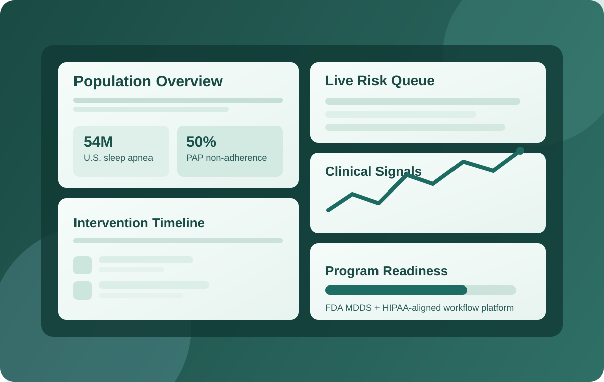

1,000,000
Medicare enrollees received RPM in 2024
HHS OIG Data Snapshot, Aug 2025
Better Sleep. Better Care. MonitAir.®
MonitAir is an all-in-one, HIPAA-compliant FDA registered Medical Device Data System (MDDS) that unifies remote data monitoring and telemedicine for PAP/NIV programs.
For sleep centers, pulmonary groups, and DME providers, MonitAir turns raw device signals into prioritized action lists so teams can intervene earlier and keep more patients on therapy.

Why Now
1,000,000
Medicare enrollees received RPM in 2024
HHS OIG Data Snapshot, Aug 2025
$536M
Medicare RPM payments in 2024
HHS OIG Data Snapshot, Aug 2025
54M
U.S. adults estimated with OSA (mild to severe)
Lancet Respiratory Medicine, 2019
16M
U.S. adults living with COPD (diagnosed)
CDC COPD indicators, updated 2024
Who Buys MonitAir

Reduce PAP drop-off in the first 90 days, standardize outreach, and surface patients who need intervention before reimbursement or outcomes are impacted.

Prioritize NIV and complex respiratory patients by risk trend, so clinicians can act earlier and avoid reactive care cycles.

Connect setup, adherence, and follow-up workflows to improve compliance, reduce leakage, and increase long-term patient retention.
Market Sizing Snapshot
54M OSA + 16M COPD diagnosed = ~70M adults (non-deduplicated).
Clinical Risk Signal
If ~50% of PAP patients are non-adherent, then roughly 27M of the 54M estimated U.S. OSA population may be at elevated risk and need structured monitoring and intervention.
Weaver et al. (2020), Truong et al. (2018)
MonitAir was designed by doctors, for doctors who manage PAP/NIV patients with chronic sleep and respiratory conditions.
Our value proposition: stay connected to patients, focus on highest-risk populations, intervene earlier, scale programs, and predict decompensation risk.
Ready to evaluate fit? Request a demo or review the full market opportunity model.